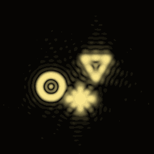
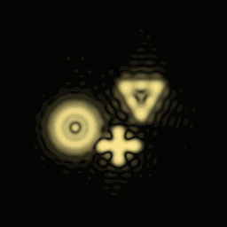

Two tools now cover the two parts of the request without disguising one as the other.
Walk around a captured photograph
Open Depth-reprojected photograph and load Depth-layer photograph studio (preset 123). The studio has a near gold sphere, a middle mint arch, a far violet relief and floor rulers. Its open foreground leaves room to inspect the capture. Use the ideal pinhole camera and GPU path tracer, let the picture converge, then press Capture photograph at this position. Step back to inspect moves away from the fixed plate; walking sideways reveals the captured depth. There is no camera movement during capture.
This is a single RGB-D capture. It stores the displayed colour and the GPU tracer's matching axial first-hit depth, reconstructs a surface mesh, and views that frozen mesh through a framed plane. A uniform scale places the geometry behind the frame while preserving the capture-view perspective. The plate stays fixed in the world as the camera moves. Current first-hit scene depth occludes it, so a foreground object can hide the photograph.
The original view need not be rendered again after capture. Reprojection uses at most 640 samples across the image and omits triangles crossing depth discontinuities. Empty regions are deliberately dark: one photograph has no evidence about the newly exposed sides of an object. Reflections keep their recorded appearance, transparent objects have ambiguous first-hit depth, and changing the later scene does not alter the stored capture. Capture requires the ideal pinhole GPU view; stale CPU depth is rejected.
Brightness, displayed depth, and a display-lamp envelope are adjustable. The lamp is an artistic display control, not a diffraction or Bragg-selectivity model. This plate is a viewport overlay: it does not cast light, appear in traced reflections, or serialize into a scene file. A full light-field capture would additionally sample direction; a single RGB-D image does not contain that information. Levoy and Hanrahan, Light Field Rendering.
Record an actual wave, then replay it
Open Hologram record & wave replay. The controlled scene contains transparent amplitude masks at three distances: a ring at 3.5 cm, a triangle at 5.75 cm and a cross at 8 cm. The automatic button performs the entire recording and reconstruction. Four views expose the object layers, stored interference intensity, recovered complex phase and replay intensity.
For each layer, angular-spectrum propagation transports its complex field to the plate. The coherent sum is O. A plane-wave reference R produces the stored real image
H = |O + R|² = |O|² + |R|² + O R* + O* R.
The negative-carrier Fourier sideband contains O R*. Cropping and translating that band recovers O from H alone; reconstruction never reads the original masks. Back-propagating the recovered field changes the focus plane. Selecting Show zero + twin + image orders instead illuminates the real intensity plate and retains its other diffraction orders.
The recording remains fixed while the replay controls change. Reference-angle mismatch adds a phase ramp and shifts the reconstruction. Wavelength mismatch changes both the illuminating carrier and the propagation operator. Matching the recording illumination restores the original wavefront; changed illumination can shift and aberrate the apparent image. S. A. Benton, MIT Holographic Imaging, chapter 8.
The calculation has a declared 3.2 mm plate, 256 samples, 532 nm recording wavelength and separated spatial-frequency orders. Masks are band-limited before recording so their zero, twin and desired bands do not overlap. The sampled propagation is scalar, coherent and periodic at the FFT boundary. It does not model thick emulsions, polarization, mutual occlusion between the three masks or arbitrary coherent multiple scattering. No RGB scene intensity is relabelled as a measured complex optical field. General holographic scene capture and physical in-scene diffraction replay remain further work.
Export breakdown + raw wave data saves the four PNGs, the stored intensity and complex reconstruction in CSV, and numerical settings under research-exports.
Validation
test_hologram_replay.cpp checks intensity-only recovery against the independently retained source field, checks a signed sideband with a direct Fourier sum, verifies replay energy conservation, and exercises reference mismatch, wavelength mismatch, refocusing, depth unprojection and paired scene geometry. The default recording recovers its band-limited complex wave with relative L2 error 1.15e-14; propagated power ratio is 1.000000000000001.
test_hologram_plate_gpu.cpp creates a hidden native OpenGL context and executes the actual plate shaders. Its 17 checks cover colour/depth capture, both input image orientations, retained quadrant colours, fixed-world parallax, display illumination and foreground scene occlusion. This is separate from the scalar-wave tests.
 
These two images are computed wave reconstructions of the same stored intensity plate at different focus depths, not schematic substitutions.